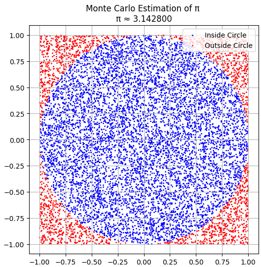

Problem 2
Estimating \(\Pi\) using Monte Carlo Methods
Motivation
Monte Carlo methods utilize randomness to approximate values that may be analytically intractable. Estimating \(\pi\) using random sampling is a well-known illustration, linking geometry, probability, and computation. This technique is widely applicable in physics, finance, and other scientific fields.
Part 1: Estimating \(\pi\) Using a Circle
1. Theoretical Foundation
A unit circle (radius = 1) inscribed in a square of side 2 has an area of:
- Circle: \(A_c = \pi r^2 = \pi \times 1^2 = \pi\)
- Square: \(A_s = 4\)
The probability that a randomly generated point in the square falls inside the circle is:
2. Simulation

Blue dots → Random points that fall inside the unit circle
Red dots → Random points that fall outside the circle
The boundary of the circle is clean and visible ‚Äî exactly what you'd expect for \(ùë•^2 + ùë¶^2 ‚â§1\)
Approximate estimate of \(\pi ≈ 3.1428\)
3. Analysis
- Convergence Rate: Slow, proportional to \(\frac{1}{\sqrt{n}}\)
- Accuracy: Improves with increasing number of points
Part 2: Estimating \(\pi\) Using Buffon’s Needle
1. Theoretical Foundation
Buffon’s Needle problem estimates \(\pi\) by dropping a needle of length \(l\) on a plane with parallel lines spaced \(d\) apart:
If \(l \leq d\), the probability of the needle crossing a line is:
Where:
-
\(N\): total drops
-
\(C\): crossings
2. Simulation

3. Analysis
- Requires many trials to converge due to rare events (line crossings).
- Slower convergence than circle-based method.
Comparison & Conclusion
| Method | Convergence Rate | Visualization Complexity | Robustness |
|---|---|---|---|
| Circle-Based | \(1/\sqrt{n}\) | Easy | High |
| Buffon’s Needle | \(\propto 1/n\) | Medium | Low (for small n) |
Monte Carlo methods provide powerful visual and practical tools for estimating \(\pi\). The circle method is more efficient and reliable for small to medium simulations, while Buffon’s method offers deep geometric insights and historical interest.
Python codes are here